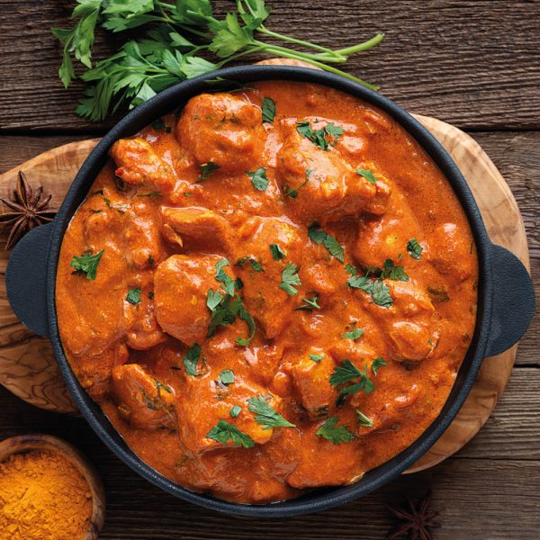

Butter Chicken
Home

Description
Butter chicken is a rich and creamy Indian curry made with tender pieces of chicken
cooked in a spiced tomato-based sauce. It is flavored with butter, cream, garlic,
and aromatic spices like garam masala for a smooth, slightly sweet taste.
It is commonly served with rice or naan bread for a hearty and satisfying meal.
Ingredients
Chicken & Marinade
- Boneless Chicken
- Yogurt
- Lemon Juice
- Ginger garlic paste
- Salt
- Garam Massala
- Tumeric
- Kashmiri chilli Powder
Sauce (Gravy)
- Butter
- Onions
- Tomatoes
- Garlic
- Ginger
- Heavy Cream
- Cashews
- Garam masala
- Coriander powder
- Cumin
- Chilli Powder
- Sugar
- Salt
Steps
- Marinate the chicken with yogurt, lemon juice, ginger-garlic paste, salt, and spices.
Let it rest for at least 1–2 hours (or overnight for better flavor).
- Cook the marinated chicken by grilling, baking, or pan-frying until lightly browned and cooked through. Set aside.
- In a pan, melt butter and sauté finely chopped onions until soft and golden.
- Add ginger and garlic, then cook for a minute before adding tomatoes. Cook until the tomatoes break down and become soft.
- Blend the mixture into a smooth sauce (optional for a restaurant-style texture), then return it to the pan.
- Add spices (garam masala, cumin, coriander powder, chili powder) and cashew paste if using. Simmer for a few minutes.
- Add cream and the cooked chicken pieces, stirring well to coat them in the sauce.
- Simmer for 5–10 minutes until the sauce thickens, then finish with a little butter and fresh coriander on top.